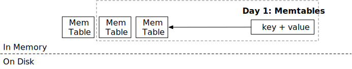
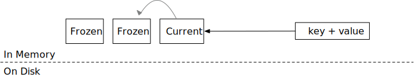

Memtables

在本章中，您将：
- 基于跳表实现 memtables。
- 实现冻结 memtable 的逻辑。
- 为 memtables 实现 LSM 读取路径
get。
要将测试用例复制到启动代码并运行它们，
cargo x copy-test --week 1 --day 1
cargo x scheck
任务 1：跳表 Memtable
在这个任务中，您需要修改：
src/mem_table.rs
首先，让我们实现 LSM 存储引擎的内存结构——memtable。我们选用 crossbeam 的跳表实现 作为 memtable 的数据结构，这是因为它支持无锁的并发读写操作。我们不会深入讲解跳表的工作原理，简而言之，它是一个有序的键值映射，可以轻松支持并发读写。
crossbeam-skiplist 提供了与 Rust 标准库的 BTreeMap 类似的接口：insert、get 和 iter。唯一的区别是修改接口（即 insert）只需要跳表的不可变引用，而不是可变引用。因此，在您的实现中，不应在实现 memtable 结构时使用任何互斥锁。
您还会注意到 MemTable 结构没有 delete 接口。在 mini-lsm 实现中，删除表示为对应于空值的键，我们称之为 删除 tombstone。
在这个任务中，您需要实现 MemTable::get 和 MemTable::put 以启用 memtable 的修改。
我们使用 bytes crate 来存储 memtable 中的数据。bytes::Byte 类似于 Arc<[u8]>。当您克隆 Bytes 或获取 Bytes 的切片时，底层数据不会被复制，因此克隆它的成本很低。相反，它只是创建了对存储区域的新引用，当没有对该区域的引用时，存储区域将被释放。
任务 2：引擎中的单个 Memtable
在这个任务中，您需要修改：
src/lsm_storage.rs
现在，我们将添加我们的第一个数据结构，memtable，到 LSM 状态中。在 LsmStorageState::create 中，您会发现当创建 LSM 结构时，我们将初始化一个 id 为 0 的 memtable。这是初始状态中的 可变 memtable。在任何时候，引擎只有一个单一的可变 memtable。memtable 通常有一个大小限制（例如 256MB），当达到大小限制时，它将被冻结为不可变 memtable。
查看 lsm_storage.rs，您会发现有两个结构表示存储引擎：MiniLSM 和 LsmStorageInner。MiniLSM 是 LsmStorageInner 的薄包装。您将在 LsmStorageInner 中实现大部分功能，直到第 2 周的压缩。
LsmStorageState 存储当前 LSM 存储引擎的结构。目前，我们只使用 memtable 字段，它存储当前的可变 memtable。在这个任务中，您需要实现 LsmStorageInner::get、LsmStorageInner::put 和 LsmStorageInner::delete。它们都应该直接将请求分派到当前的 memtable。

您的 delete 实现应该简单地为该键放置一个空切片，我们称之为 删除 tombstone。您的 get 实现应该相应地处理这种情况。
要访问 memtable，您需要获取 state 锁。由于我们的 memtable 实现只需要 put 的不可变引用，因此您只需要在修改 memtable 时获取 state 的读锁。这允许多个线程并发访问 memtable。
任务 3：写路径 - 冻结 Memtable
在这个任务中，您需要修改：
src/lsm_storage.rs
src/mem_table.rs

Memtable 不能无限增长，当达到大小限制时，我们需要冻结它们（稍后刷新到磁盘）。您可能会在 LsmStorageOptions 中找到 memtable 的大小限制，它 等于 SST 的大小限制（不是 num_memtables_limit）。这不是一个硬限制，您应该尽力冻结 memtable。
在这个任务中，您需要在 memtable 中 put/delete 键时计算近似的 memtable 大小。这可以通过简单地添加 put 调用时键和值的总字节数来计算。如果一个键被放置了两次，尽管跳表只包含最新的值，您可以在近似 memtable 大小中计算两次。一旦 memtable 达到限制，您应该调用 force_freeze_memtable 来冻结 memtable 并创建一个新的。
因为可能有多个线程将数据写入存储引擎，force_freeze_memtable 可能从多个线程并发调用。您